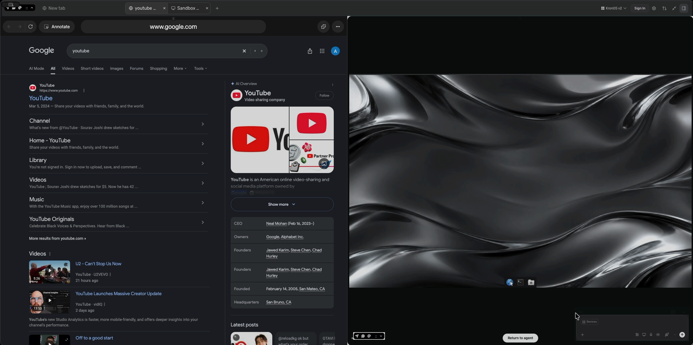

KronOS
One conversation.

A tab for everything.
TABS
A whole computer. One tab.
SANDBOX VM
Room for everything.
CANVAS
Ask. Watch it happen.
BROWSER
Point. Make it clear.
ANNOTATE
Make it yours.
DESIGN
KronOS
BRING IT TOGETHER
too
many
apps,
not enough
connection?
KronOS
Everything, connected.
PRIVATE BETA